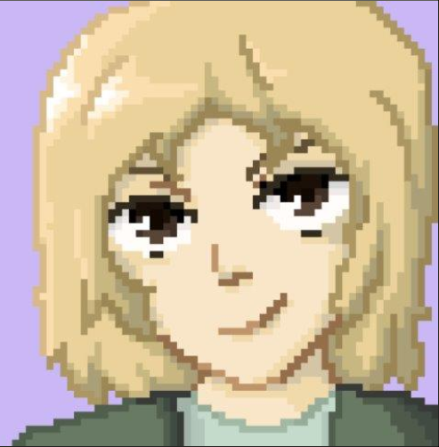
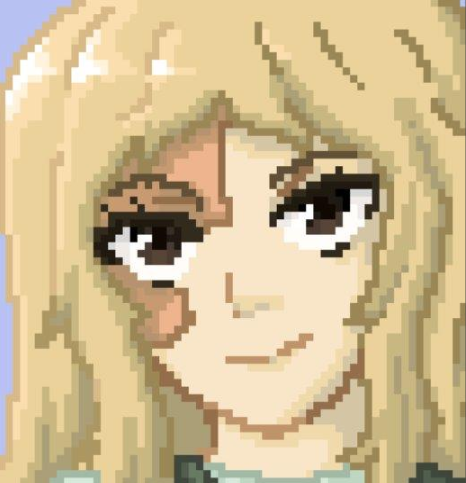
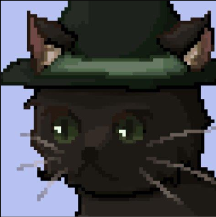
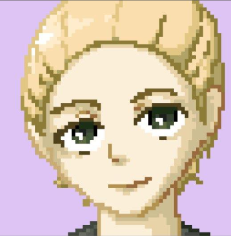
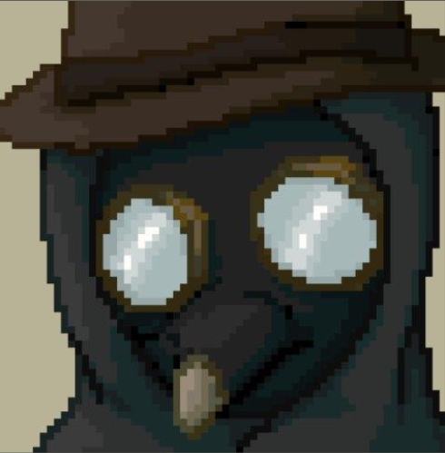
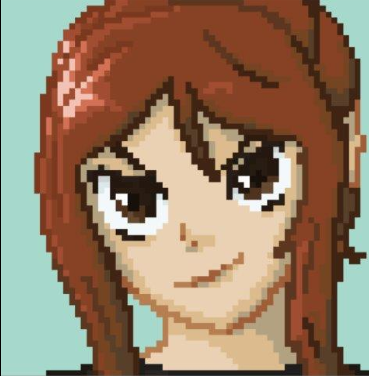
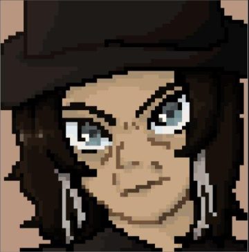
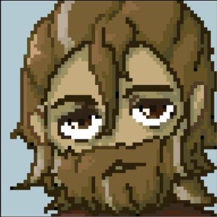

Age: 16
Role: Aspiring Adventurer
Enneagram: SX4
Wilfred is a spirited young adventurer determined to prove himself to the world. Bold, charismatic and perhaps eager to be the hero too often, he sets out on a dangerous journey to rescue his twin sister. Beneath his confident exterior lies a deep desire for recognition and a complicated relationship with both his family and his own sense of self.


Age: 16
Role: Witch Apprentice
Enneagram: SO9
Winifred is a kind-hearted young witch whose compassion has earned the respect of her community. Curious and determined, she uses her magical abilities to help others despite the suspicion that often surrounds witches. Her journey challenges her to find confidence in herself while uncovering the truth about her family's past.

Age: 35
Role: Family Figure
Enneagram: SP2
Katherine was a respected figure in the village and loved dearly by her twin children, known for her warmth and wisdom. She valued kindness, trust and emotional understanding, shaping the lives of those around her. Her influence continues to both guide and conflict her children after her passing.

Age: 37
Role: Government Physician
Enneagram: SO1
A respected physician and influential researcher, Dr. Akagaul has dedicated his career to studying the mysterious rise of witchcraft. Driven by an unwavering belief in order and control, he pursues his work with ruthless determination, regardless of the consequences for those caught in his path.

Age: 25
Role: Witch Finder
Enneagram: SP7
Beatrix is a clever and resourceful witch finder who survives through wit and calculated manipulation. Skilled at gathering information and reading people, she has built a reputation for uncovering secrets wherever she goes. Beneath her confidence is a woman determined and paranoid to stay one step ahead of those who would could use her.

Age: 42
Role: Witch Hunter
Enneagram: SP4
Lionel is a veteran witch hunter guided by a powerful sense of duty and justice. Stoic and disciplined, he believes deeply in protecting innocent people, even when his philosophy places him in difficult situations. His experience has taught him that the world is rarely as simple as good and evil...

Age: 38
Role: Explorer
Enneagram: SX6
William is a renowned explorer whose travels have taken him across distant lands. Independent and resilient, he believes strength is essential for surviving an uncertain world. His experiences have shaped a man who values loyalty, determination and knowing the answers.